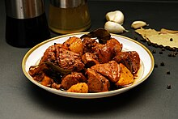

Adobo Recipe

Description
This recipe has been part of the culture of every
Filipino. It is made on holidays, fiestas. The main dish for every
celebration.
This website will show you what the recipes are needed to make an
authentic Filipino style Adobo.
Ingredients
- Soy Sauce
- Vinegar
- 1/2 Kilo of chicken, cut into pieces
- 6 tablespoon of cooking oil
- Whole onion, chopped and sliced
- 3 Garlic cloves, minced
- 3 full cups of water
- MSG
- 3 packs of black pepper whole
- 2 bay leaf
- 1/4 cup of sugar
Steps
- Heat up the cooking pan
- Put the oil once the pan is hot
- Drop the onions at the boiling oil
- Once it looks like withered, follow it up with a garlic
- After this, drop in 4 table spoons of soy sauce
- Add the cutlet pork
- Garnish with the bayleafs
- Add the whole black pepper into the mix
- Add as much as vinegar you like for the sour taste
- Add in your sugar to balance all the taste
- Add the MSG for the magic to form
- Voila, serve and eat
Back to Homepage